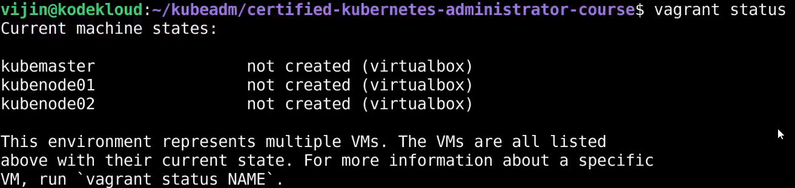

Demo - Setup Lab - VirtualBox
Andiamo al link:
https://github.com/kodekloudhub/certified-kubernetes-administrator-course
Come base: dobbiamo avere Vagrant e VirtualBox installati sui nostri sistemi.
Useremo Vagrant per automatizzare la connessione dei Worker Nodes col Master.
Ora cloniamo il repo ed usiamo Vagrant dentro:
Ci dirà che non vi sono le VM create!

Portiamo le VM up:

Ora controlliamo lo status:

Possiamo usare Vagrant per accedere ai nodi per sapere se sono on!